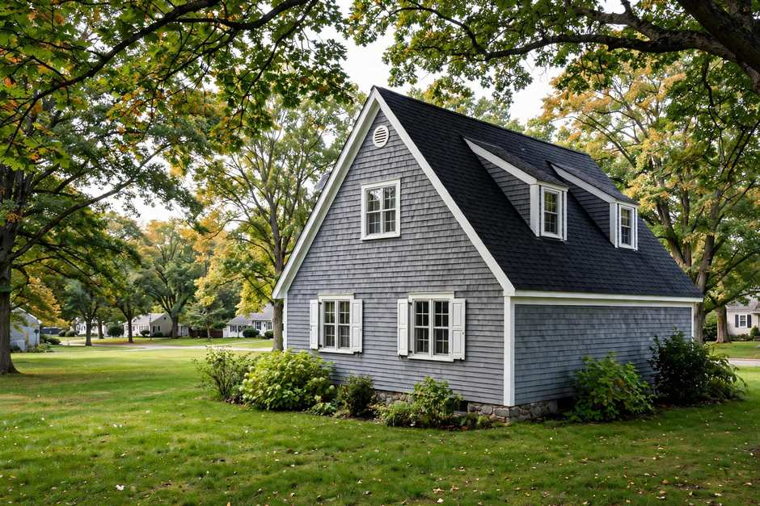
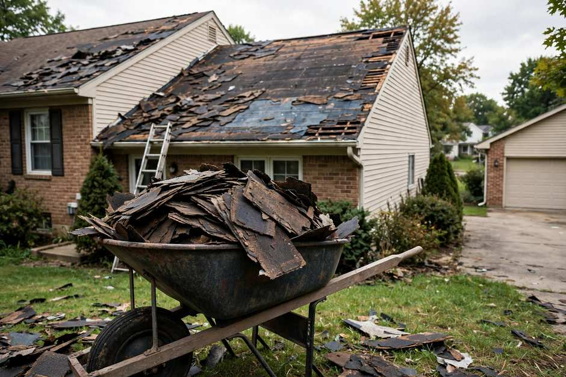
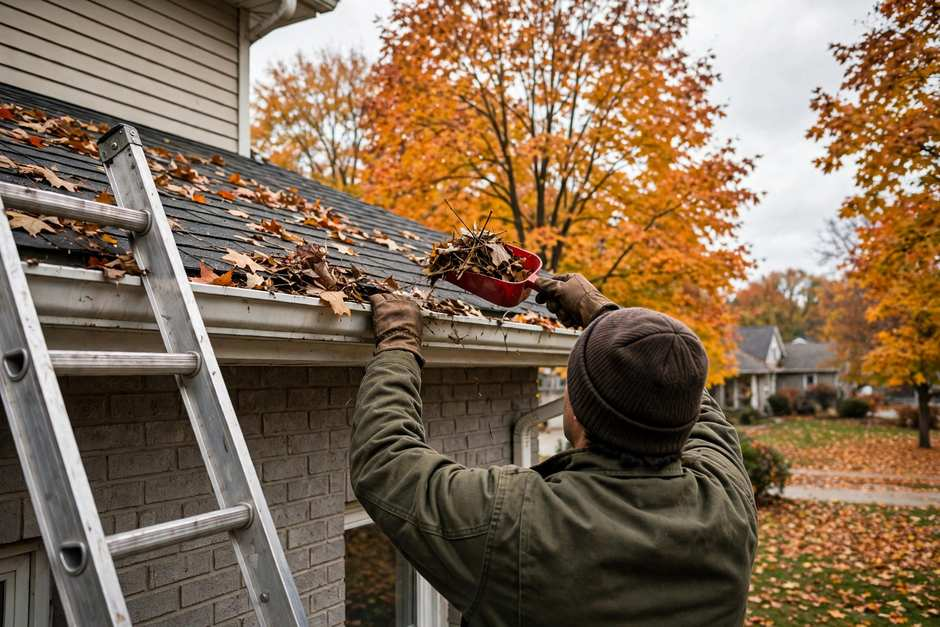
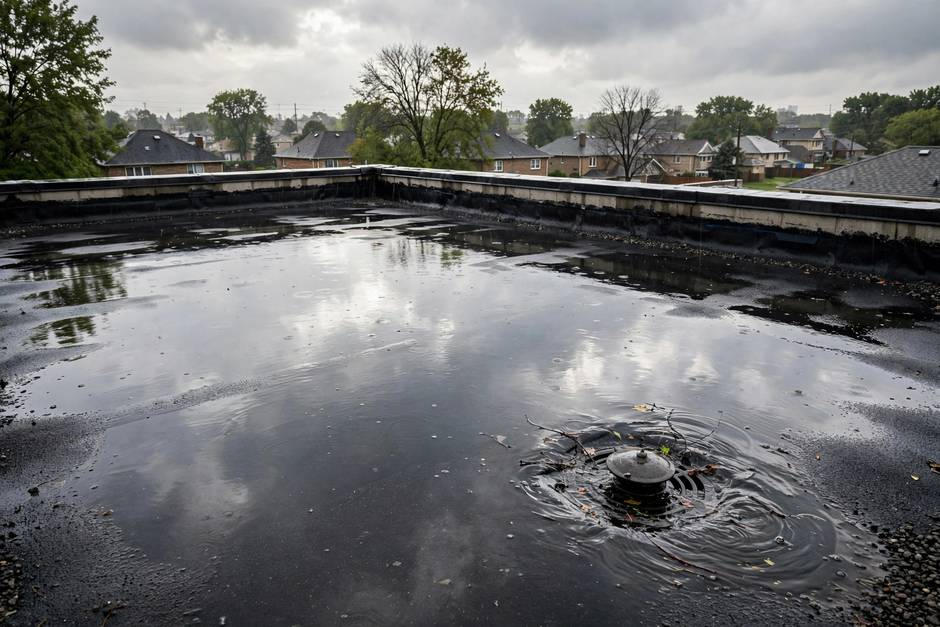
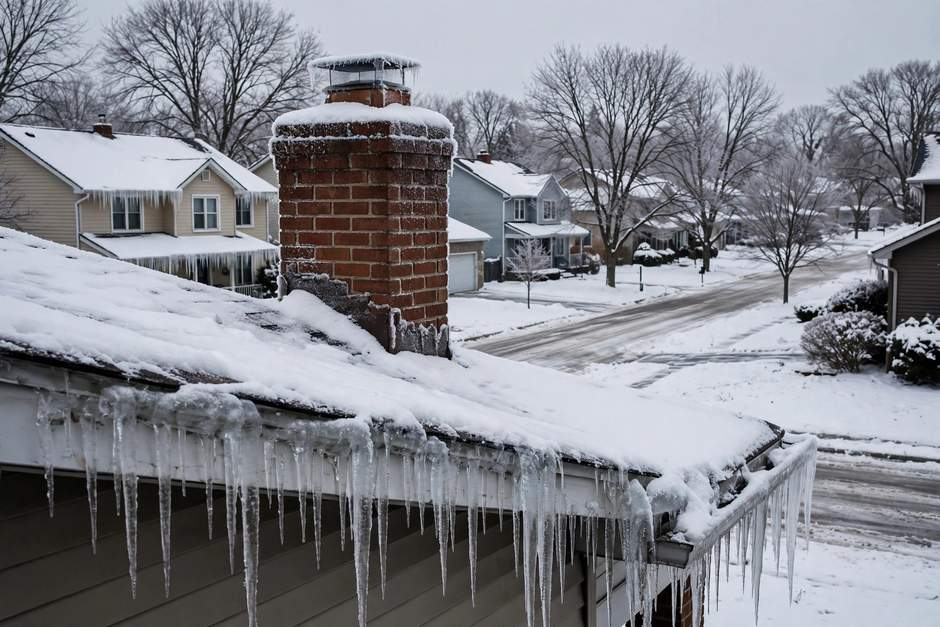

Active leaks and ceiling stains
Water showing inside calls for a source-first look: attic, flashing, valleys, penetrations. Where water is coming in through a breach, emergency roof repair covers temporary protection.
Roof repair in Des Plaines, IL covers the problems that show up between replacements: an active leak, missing or cracked shingles, loose flashing, or a failing pipe boot. Where damage is limited and the rest of the roof is sound, a repair is often the right scope. Call (224) 802-4866 during office hours to describe what you are seeing.
Tell us what is happening with your roof. Office hours: Mon–Tue 7:30 AM–7:00 PM, Wed–Fri 7:30 AM–7:30 PM, Sat 8:30 AM–5:00 PM, Sun closed.
Call (224) 802-4866 → Phone is the only contact channel.
A roof repair addresses a specific failure — a leak source, a run of damaged shingles, a flashing joint, a pipe boot, or a valley — without replacing the whole covering. It starts with finding the source: water that stains a ceiling may enter the roof some distance away, travelling along decking or framing before it shows inside.
Common repair topics in Des Plaines include leaks, missing or cracked shingles, loose flashing around chimneys and walls, and failing rubber pipe boots — the list of calls local guides describe for this city. Freeze–thaw cycling through the winter months works flashing joints and shingle seals loose, and ice-dam leaks often first appear as stains near exterior walls. Older stock around Cumberland and Orchard Place carries the same mid-century details: dormers, valleys, and added sections with junctions that ask for attention. Where wear is widespread, the conversation becomes roof replacement; where the source is unclear, a roof inspection documents it first.
The items below describe repair scope generally. Masonry work on chimneys, tree removal, and interior repair are separate trades and are not part of a roof repair. Where a repair cannot hold because the covering has failed broadly, that is stated plainly and replacement is discussed instead.
A leak repair looks for the entry point, not just the stain. Attic inspection from below, flashing checks at chimneys and walls, and a look at valleys and penetrations narrow the source before anything is opened up.
Missing, cracked, or wind-lifted shingles are replaced individually where the surrounding covering is sound. Matching depends on the age and product of the existing roof, and an exact match is not always possible on older coverings.
Step flashing, counter-flashing, and valley metal are repaired or renewed where joints have opened or rusted. Chimney flashing repair covers the metal at the roof junction only — brick, mortar, and chimney rebuilding are masonry work, outside a flashing repair.
Rubber pipe boots crack with age and sun, and valleys collect wear from the water they carry. Boots are replaced, vent flashing is resealed or renewed, and valley metal is repaired where it has worn or lifted.
Chicagoland guides frame the choice this way: repair where damage is isolated and the decking and covering are otherwise sound; consider replacement where failure is widespread or the covering is near the end of its service. The replacement page explains the other side of that choice.
Roof coatings and rejuvenation treatments are sometimes marketed for asphalt roofs, but they are not a standard residential offer here, and no coating fixes failed flashing, worn valleys, or deteriorated decking. Ask when you call whether a coating is even relevant to your roof — a repair or replacement is usually the real question.
Call during office hours and describe the stain, the missing shingles, or the damage after a storm. What you report — where water shows, when it started, what the last storm did — shapes what gets looked at first.
The roof surface, flashing, valleys, and penetrations are checked, along with accessible attic conditions where the leak path can be traced. Photos document what is found.
Where damage is isolated, the repair scope is discussed. Where wear is widespread, replacement is discussed instead, with the findings shown rather than assumed.
Shingles, flashing, boots, or valley metal are repaired or renewed as scoped. Surrounding areas are checked while the work is open, since a second weak joint nearby is common.
After a repair, the next heavy rain is the honest test. Watch the same ceiling and attic spots, and note anything that returns. Ventilation and gutter condition affect how a repair holds — see attic ventilation and gutter installation.
Repair work uses hand tools and ordinary roofing equipment. The method follows the failure found, not a fixed routine.
Lifts shingles and old flashing without tearing the surrounding covering, so a repair stays local.
Sets and removes nails around the repair area, including starter and course nails that must be handled without splitting shingles.
Keeps replacement shingles aligned with existing courses on visible slopes.
Sealant has a place at specific joints and fasteners. It is not a substitute for renewed flashing where metal has rusted or opened.
Keeps ladders off gutters and provides protection on steep slopes. Wet or icy roofs are not worked on in a rush.
Photos record the failure found and the repair made, which matters for your own records and for any later discussion with your insurer.
A brown ring on a ceiling, or damp insulation in the attic, after heavy rain. The entry point may sit upslope from the stain.
Ask how the source will be traced before work starts, and what will be photographed. A repair that seals the stain's location without finding the entry rarely holds.
Lifted tabs, creased shingles, or bare patches where courses tore away. Surrounding shingles may be loosened without looking damaged.
Ask whether surrounding courses will be checked and re-secured, and whether the damage is local or spread across slopes — which decides repair against replacement.
Water where the chimney meets the roof, often blamed on the shingles. Step flashing, counter-flashing, or the cricket is usually the actual path.
Ask whether the flashing will be renewed or only resealed, and whether masonry is involved — masonry repair is a separate trade from flashing work.
Repair suits failures that are local: one joint, one slope section, one penetration. The problems below are the usual repair calls in Des Plaines.
Ask a pro →Water showing inside calls for a source-first look: attic, flashing, valleys, penetrations. Where water is coming in through a breach, emergency roof repair covers temporary protection.
Individual shingles are replaced where the field is sound. After a storm, the same damage may belong on the storm damage page, with documentation guidance.
Loose flashing at chimneys and walls and cracked rubber boots are among the most common leak sources on mid-century roofs. Renewal, not resealing alone, is the durable answer where metal has rusted.
Valleys carry the most water and wear first. Debris left in a valley holds moisture against the covering. Gutter condition feeds the same problem — see gutter installation.
“Patryk was great to work with and extremely professional. I highly recommend WP exteriors and plan on using them again in the future!”
Brian Avila GaonaGoogle review · 5 months ago · Roof inspection
“I use WP Exteriors to repaint my roof and do as some tuckpointing on the exterior of my building. Pat and his team were very professional and communicative. They did a good job explaining what needs to be done to my home immediately and what I can plan for in the future. I will definitely be using them in the future.”
Patricia MurrayGoogle review · 2 months ago
“Thank you Patrick for doing an amazing job. Great work me and my wife are very happy. Also thanks for being reliable.”
Phil NegronGoogle review · 2 months ago · Gutter repairs
Look for water stains on ceilings, daylight through roof boards in the attic, dark stains on rafters, or damp insulation. From the ground, look for missing or cracked shingles, granules piling up in gutters, and rusted or loose flashing around the chimney. A stain that appears after rain and fades between storms still points to an entry worth tracing. An inspection can confirm the source before any repair is chosen.
Chicagoland guides frame the choice this way: repair where damage is isolated and the decking and covering are otherwise sound, and consider replacement where failure is widespread, granule loss is heavy across slopes, or the covering is near the end of its service. The decision rests on what an inspection finds — soft decking, widespread wear, and flashing failure across several junctions all push toward replacement.
Chimney flashing repair covers the metal at the junction between the chimney and the roof: step flashing, counter-flashing, and the cricket where one is fitted. It does not cover brick, mortar, tuckpointing, or chimney rebuilding — that is masonry work, a separate trade. If masonry is crumbling or the chimney crown is failing, say so when you call, so the right trade is part of the conversation.
Permit requirements vary, so ask the City of Des Plaines Building Division before work starts. The City's Roof Guide describes a 25%-in-12-months permit position that is being confirmed with the Building Division, and no repair should be assumed exempt without asking. Where a permit applies, the Guide calls for a final inspection.

Skylight InstallationSkylight leaks usually start at flashing or the curb. Replacement, reflashing, and leak repair, tied to the roof around them.Explore →
Roof ReplacementWhere wear is widespread or the decking has failed, replacement is the fuller answer — tear-off, ice barrier, flashing, and a new covering.Explore → Roof InspectionWhere the source of a problem is unclear, an inspection documents the surface, flashing, valleys, and attic before any scope is chosen.Explore →
Roof InspectionWhere the source of a problem is unclear, an inspection documents the surface, flashing, valleys, and attic before any scope is chosen.Explore →
Gutter InstallationGutters, downspouts, fascia, and soffit — the drainage edge that affects valleys, eaves, and ice-dam behaviour.Explore → Emergency Roof RepairTemporary protection for a breached or leaking roof, and safety steps while a permanent repair is planned. Call during office hours.Explore →
Emergency Roof RepairTemporary protection for a breached or leaking roof, and safety steps while a permanent repair is planned. Call during office hours.Explore → Storm Damage Roof RepairHail and wind damage on one page: how damage shows, how to document it, and the lawful shape of the insurance process.Explore →
Storm Damage Roof RepairHail and wind damage on one page: how damage shows, how to document it, and the lawful shape of the insurance process.Explore →
Flat Roof RepairLow-slope sections on additions, porches, dormers, and garages: membranes, seams, ponding, and tie-ins to pitched roofing.Explore →
Attic VentilationRidge and soffit ventilation, ice-dam mechanics, and the boundary with insulation and air-sealing work.Explore →Call (224) 802-4866 during office hours and describe the leak, the missing shingles, or the stain. We will talk through what a visit looks at and whether repair or replacement is the right conversation.
Call (224) 802-4866 →Call (224) 802-4866 during office hours to talk about your roof. Tell us what you are seeing — a stain, a missing shingle, damage after a storm — and we will talk through what a visit would look at. Office hours: Monday and Tuesday 7:30 AM–7:00 PM, Wednesday through Friday 7:30 AM–7:30 PM, Saturday 8:30 AM–5:00 PM, Sunday closed.